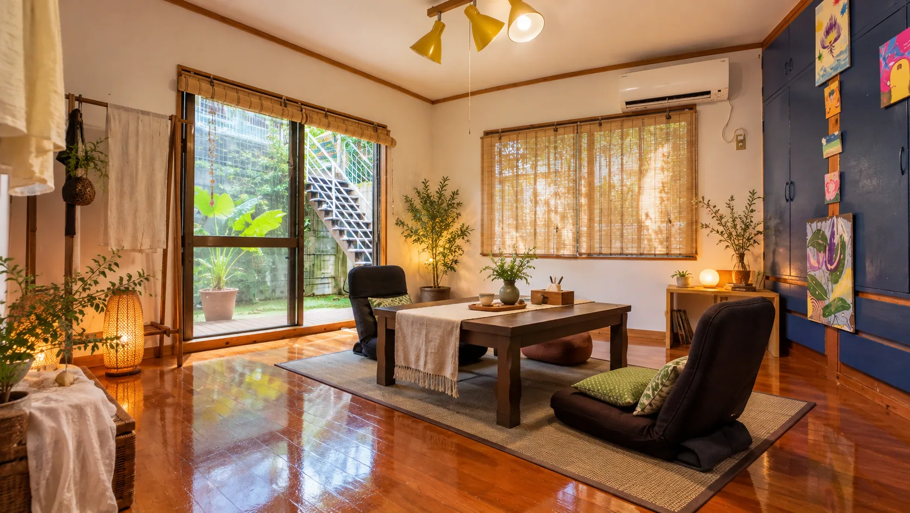
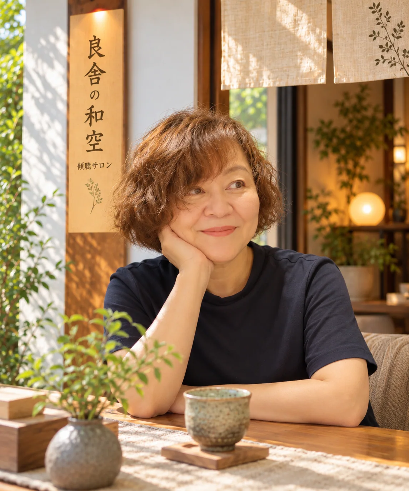
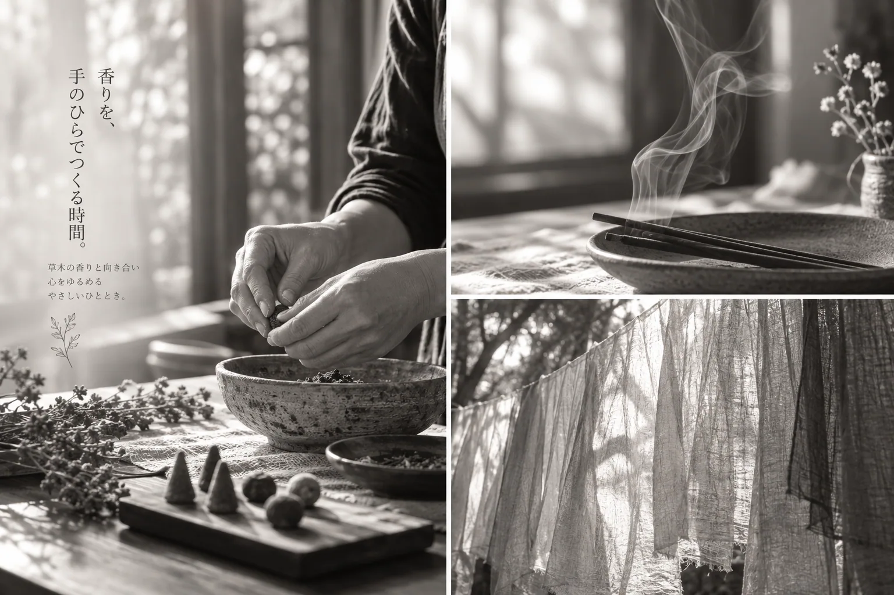

BOTANICAL DYEING公式LINEで体験を予約する ↗
草木染め体験
自然が生み出す色に、正解はありません。
手を染め、布を染め、ひとつとして同じではない色との出会いを楽しみます。
体験料 お一人 3,500円
所要時間 120分
人数 2〜4名様／回（予約制）
染める素材は別料金
例：日本製シルクストール ＋3,500円
水のゆらぎ、風の気配。
静かな音とともに、ひと呼吸。
音は再生ボタンを押すと流れます。
話すこと、染めること、香ること。
良舎の和空は、首里にある小さな傾聴サロンです。
誰かのための時間から、ほんの少し離れて。
自分の気持ちに、静かに向き合うひとときを。

SHURI, OKINAWA — A QUIET PLACE TO BE答えを急がなくても、うまく説明できなくても構いません。
ここでは、あなたのペースで言葉を紡いでください。
話すことで、自分でも気づかなかった思いに出会うことがあるかもしれません。

傾聴家 なかがわ りょうこ
日々の慌ただしさから離れて。
植物の色や香りにふれながら、自分のための時間を。
自然が生み出す色に、正解はありません。
手を染め、布を染め、ひとつとして同じではない色との出会いを楽しみます。
体験料 お一人 3,500円
所要時間 120分
人数 2〜4名様／回（予約制）
染める素材は別料金
例：日本製シルクストール ＋3,500円

天然素材の香りを選び、ゆっくり調えながら、自分だけの香りをかたちに。
香りを通して、今の自分と向き合うひとときです。
体験料 お一人 3,500円
所要時間 120分
人数 2名様から（予約制）
草木染めで生まれた布や小物を、日々の暮らしのなかでも。
草木染めとお香は、オンラインショップでもお求めいただけます。
オンラインショップは、ただいま準備中です。
傾聴・草木染め・お香づくり体験は、すべて完全予約制です。
どうぞ、ご自分のペースでお越しください。
休業日：月曜・火曜
オンライン傾聴：20:00〜22:00
※オンラインの実施日・終了時刻は予約時にご確認ください。
沖縄県那覇市首里
詳しい所在地はご予約時にご案内します。
公式LINEを友だち追加して、ご希望の内容と日時をお送りください。
話す内容をまとめておく必要はありません。言葉にならない気持ちも、沈黙も、そのままで。ご自分のペースでお話しください。
草木染めは2〜4名様、お香づくりは2名様から承ります。どちらも120分・予約制です。
体験料3,500円とは別に、染める素材の料金がかかります。日本製シルクストールは、素材代として3,500円が目安です。
オンライン傾聴に対応しています。時間は20:00〜22:00で、実施日はご予約時にご相談ください。